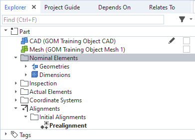
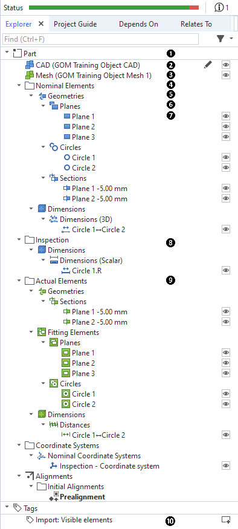
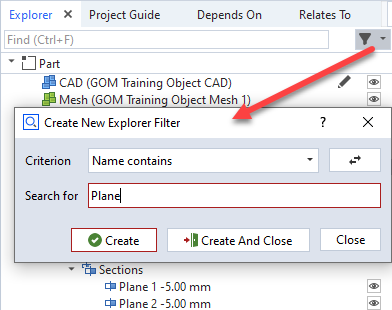
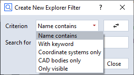

Selecting elements in scripts
Selecting elements using
gom.ElementSelection()has been mentioned in ZEISS INSPECT Python API Introduction briefly. This section describes howElementSelectionis used in more details.
Note
You are advised to create element selections by script recording, because this is less error-prone than programming the needed command parameters.
Recording element selections
You record an element selection by marking the desired groups of elements in the Explorer and executing a command on this selection. For convenience, you can use the command gom.script.cad.show_element() (shortcut: v) and replace it by the actual command in the script later. You can also select multiple elements at once.

gom.script.cad.show_element (
elements=gom.ElementSelection (
{'category': [
'key', 'elements', 'part', gom.app.project.parts['Part'], 'explorer_category', 'nominal'
]}
)
)
Note
The parameter passed to ElementSelection is a dictionary with the key 'category' and a list as value. The items in this list are essentially key - value pairs.
Accessing elements in a selection
ElementSelection is a reference to the selected elements:
elements=gom.ElementSelection (
{'category': [
'key', 'elements', 'part', gom.app.project.parts['Part'], 'explorer_category', 'nominal'
]}
)
print(elements)
# output:
# gom.ElementSelection ({'category': ['key', 'elements', 'part', gom.app.project.parts['Part'], 'explorer_category', 'nominal']})
To access the selected elements for reading their properties (e.g. element names), you use the returned reference in an iteration:
for element in elements:
print(element.name)
# Example output:
# Plane 1
# Plane 2
# Circle 1
To get a list of element references, you use:
element_list = list(elements)
print(element_list)
# Example output:
# [gom.app.project.inspection['Plane 1'], gom.app.project.inspection['Plane 2'], gom.app.project.inspection['Circle 1']]
Using a Python comprehension, you can add another filtering condition:
element_list = [ element for element in elements if element.name.endswith(' 1') ]
# Example output:
# [gom.app.project.inspection['Plane 1'], gom.app.project.inspection['Circle 1']]
Examples
The following Explorer element tree is used to give some ElementSelection examples:

Note
In the examples below, all selections are restricted to a specific part (part name: Part). You can omit the filter specification 'part', gom.app.project.parts['Part'] to get a selection across any part or — if the project contains multiple parts — all parts.
Part
elements=gom.ElementSelection ( {'category': ['key', 'elements', 'part', gom.app.project.parts['Part']]} )
CAD Elements (Nominal part)
elements=gom.ElementSelection ( {'category': [ 'key', 'elements', 'explorer_category', 'nominal_part' ]} )
Mesh Elements (Actual part)
elements=gom.ElementSelection ( {'category': [ 'key', 'elements', 'explorer_category', 'actual_part' ]} )
Nominal Elements
elements=gom.ElementSelection ( {'category': [ 'key', 'elements', 'part', gom.app.project.parts['Part'], 'explorer_category', 'nominal' ]} )
Nominal Elements — Geometries
elements=gom.ElementSelection ( {'category': [ 'key', 'elements', 'part', gom.app.project.parts['Part'], 'explorer_category', 'nominal', 'object_family', 'geometrical_element' ]} )
Nominal Elements — Geometries — Planes
elements=gom.ElementSelection ( {'category': [ 'key', 'elements', 'part', gom.app.project.parts['Part'], 'explorer_category', 'nominal', 'object_family', 'geometrical_element', 'type', 'inspection_plane' ]} )
Nominal Elements — Geometries — Planes mdash; Plane 1
💡 The leaf nodes of the element tree are elements, not element selections!
elements=[gom.app.project.inspection['Plane 1']]
Inspection
elements=gom.ElementSelection ( {'category': [ 'key', 'elements', 'part', gom.app.project.parts['Part'], 'explorer_category', 'inspection' ]} )
Actual Elements
elements=gom.ElementSelection ( {'category': [ 'key', 'elements', 'part', gom.app.project.parts['Part'], 'explorer_category', 'actual' ]} )
Tags
elements=gom.ElementSelection (
{'category': ['key', 'elements', 'explorer_category', 'tags']}
)
Explorer filter
An Explorer Filter restricts the available elements to a certain criterion:


You can add the Explorer Filter interactively, record the resulting command and use the filter parameter in a subsequent ElementSelection:
# Recorded command, can be deleted after copying the filter parameter to the ElementSelection
gom.script.sys.create_explorer_filter (
filter={'param': 'Circle', 'type': 'by_name'},
uuid='00000000-0000-0000-0000-000000000000'
)
# Nominal elements with 'Circle' in name
elements=gom.ElementSelection (
{'category': [
'key', 'elements', 'part', gom.app.project.parts['Part'], 'explorer_category', 'nominal'
]},
filter={'param': 'Circle', 'type': 'by_name'}
)
Syntax
ElementSelection (
{'category': [
'key', 'elements'
[, 'part', <part_reference>]
[, 'is_element_in_clipboard', 'True' |
'False'
]
[, 'explorer_category', 'measurements' |
'nominal_part' |
'actual_part' |
'linked_volumes' |
'nominal' |
'inspection' |
'actual' |
'coordinate_systems' |
'alignment' |
'reports' |
'stage_ranges' |
'tags' |
...
[, 'object_family', <object_family_name> [, 'type', <type_name>]]
]
]}
)
ElementSelection (
{'category': [...]},
filter = {['inverse': True,] 'param': <name>, 'type': 'by_name' } |
{['inverse': True,] 'param': <keyword>, 'type': 'by_keyword' } |
'visible' |
'bodies' |
'coordinate_systems' |
{'inverse': True, 'type': 'visible' | 'bodies' | 'coordinate_systems'}
)
You can also use the ElementSelection command with multiple selection filters:
elements = gom.ElementSelection (
{'category': ['key', 'elements', 'explorer_category', 'nominal']},
{'category': ['key', 'elements', 'explorer_category', 'actual']}
)